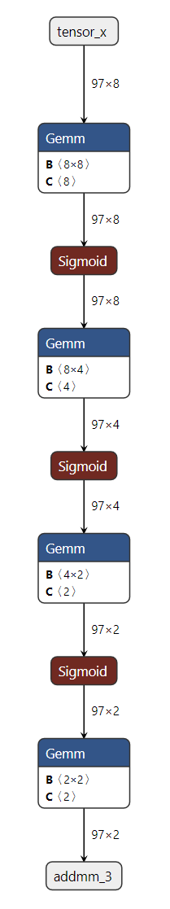

基于 TorchDynamo 的 ONNX 导出器 ¶
警告
TorchDynamo 的 ONNX 导出器是一个快速发展的测试版技术。
概述 ¶
ONNX 导出器利用 TorchDynamo 引擎钩入 Python 的帧评估 API，并将其字节码动态重写为 FX 图。生成的 FX 图在最终转换为 ONNX 图之前会被润色。
这种方法的优点主要是使用字节码分析来捕获 FX 图，从而保留了模型的动态特性，而不是使用传统的静态跟踪技术。
此外，在导出过程中，与 TorchScript 启用导出器相比，内存使用量显著降低。有关更多信息，请参阅内存使用文档。
依赖项
ONNX 导出器依赖于额外的 Python 包：
它们可以通过 pip 安装：
pip install --upgrade onnx onnxscript
然后，可以使用 onnxruntime 在多种处理器上执行模型。
一个简单的示例 ¶
下面是一个使用简单多层感知器（MLP）作为示例的导出器 API 演示：
import torch
import torch.nn as nn
class MLPModel(nn.Module):
def __init__(self):
super().__init__()
self.fc0 = nn.Linear(8, 8, bias=True)
self.fc1 = nn.Linear(8, 4, bias=True)
self.fc2 = nn.Linear(4, 2, bias=True)
self.fc3 = nn.Linear(2, 2, bias=True)
def forward(self, tensor_x: torch.Tensor):
tensor_x = self.fc0(tensor_x)
tensor_x = torch.sigmoid(tensor_x)
tensor_x = self.fc1(tensor_x)
tensor_x = torch.sigmoid(tensor_x)
tensor_x = self.fc2(tensor_x)
tensor_x = torch.sigmoid(tensor_x)
output = self.fc3(tensor_x)
return output
model = MLPModel()
tensor_x = torch.rand((97, 8), dtype=torch.float32)
onnx_program = torch.onnx.export(model, (tensor_x,), dynamo=True)
如上面的代码所示，您只需要提供 torch.onnx.export() 的模型实例及其输入。导出器将返回一个包含导出 ONNX 图以及额外信息的 torch.onnx.ONNXProgram 实例。
可以调用 onnx_program.optimize() 来优化 ONNX 图，包括常量折叠和消除冗余操作。优化是在原地进行的。
onnx_program.optimize()
通过 onnx_program.model_proto 提供的内存中模型是一个符合 ONNX IR 规范的 onnx.ModelProto 对象。然后可以使用 torch.onnx.ONNXProgram.save() API 将 ONNX 模型序列化为 Protobuf 文件。
onnx_program.save("mlp.onnx")
基于 TorchDynamo 引擎存在两个函数用于将模型导出为 ONNX。它们在生成 torch.export.ExportedProgram 的方式上略有不同。 torch.onnx.dynamo_export() 在 PyTorch 2.1 中引入， torch.onnx.export() 在 PyTorch 2.5 中扩展，以便轻松从 TorchScript 切换到 TorchDynamo。要调用前一个函数，可以将上一个示例的最后一行替换为以下一行。
注意
torch.onnx.dynamo_export() 将在未来被弃用。请使用带有参数 dynamo=True 的 torch.onnx.export() 代替。
onnx_program = torch.onnx.dynamo_export(model, tensor_x)
使用 GUI 检查 ONNX 模型
您可以使用 Netron 查看导出的模型。
{kind=link}
转换失败时 ¶
函数 torch.onnx.export() 应再次使用参数 report=True 调用。将生成一个 Markdown 报告，以帮助用户解决问题。
API 参考 ¶
- torch.onnx.dynamo_export(model, /, *model_args, export_options=None, **model_kwargs)[source][source]¶
将 PyTorch 模型导出为 ONNX 图。
已从版本 2.7 开始弃用：请使用
torch.onnx.export(..., dynamo=True)代替。- 参数:
model (Union[Module, Callable, ExportedProgram]) – 要导出为 ONNX 的 PyTorch 模型。
model_args –
model的位置输入。model_kwargs –
model的关键字输入。export_options (torch.onnx.ExportOptions | None) – 影响导出到 ONNX 的选项。
- 返回:
导出的 ONNX 模型的内存表示。
- 返回类型:
- class torch.onnx.ONNXProgram(model, exported_program)¶
一个表示可使用 torch 张量调用的 ONNX 程序的类。
- apply_weights(state_dict)[source][source]¶
将指定状态字典的权重应用到 ONNX 模型中。
使用此方法替换 FakeTensors 或其他权重。
- 参数:
state_dict (dict[str, torch.Tensor]) – 包含要应用到 ONNX 模型中的权重的状态字典。
- compute_values(value_names, args=(), kwargs=None)[source][source]
计算 ONNX 模型中指定名称的值。
此方法用于计算 ONNX 模型中指定名称的值。这些值以字典形式返回，映射名称到张量。
- 参数:
value_names（字符串序列）- 要计算的值的名称。
- 返回:
名称到张量的映射字典。
- 返回类型:
torch.Tensor 序列
- initialize_inference_session(initializer=<function _ort_session_initializer>)[source][source]¶
初始化 ONNX Runtime 推理会话。
- 参数:
initializer (Callable[[str | bytes], ort.InferenceSession]) – 使用指定模型初始化 ONNX Runtime 推理会话的函数。默认情况下，它使用
_ort_session_initializer()函数。
- property model_proto: onnx.ModelProto¶
返回 ONNX
ModelProto对象。
- release()[source][source]
释放推理会话。
您可以通过调用此方法来释放推理会话使用的资源。
- save(destination, *, include_initializers=True, keep_initializers_as_inputs=False, external_data=None)[source][source]¶
将 ONNX 模型保存到指定的目标位置。
当
external_data是True或模型大小超过 2GB 时，权重将作为外部数据保存在单独的文件中。初始化器（模型权重）序列化行为：*
include_initializers=True,keep_initializers_as_inputs=False（默认）：初始化器包含在保存的模型中。*include_initializers=True,keep_initializers_as_inputs=True：初始化器包含在保存的模型中，并作为模型输入保留。选择此选项如果您想在推理期间覆盖模型权重。*include_initializers=False,keep_initializers_as_inputs=False：初始化器不包含在保存的模型中，也不作为模型输入列出。选择此选项如果您想在推理期间提供初始化器并希望最小化保存的模型大小。*include_initializers=False,keep_initializers_as_inputs=True：初始化器不包含在保存的模型中，但作为模型输入列出。选择此选项如果您想在推理期间提供初始化器并希望最小化保存的模型大小。- 参数:
目标路径（str | os.PathLike）- 保存 ONNX 模型的路径。
include_initializers（bool）- 是否在保存的模型中包含初始化器。
keep_initializers_as_inputs（bool）- 是否将初始化器作为输入保留在保存的模型中。如果为 True，初始化器将被添加为模型的输入，这意味着它们可以被覆盖。通过提供初始化器作为模型输入来实现。
external_data（bool | None）- 是否将权重保存为外部数据，存储在单独的文件中。
- 引发:
类型错误 - 如果
external_data是True，而destination不是一个文件路径。
- class torch.onnx.ExportOptions(*, dynamic_shapes=None, fake_context=None, onnx_registry=None, diagnostic_options=None)¶
影响 TorchDynamo ONNX 导出器的选项。
已从版本 2.7 开始弃用：请使用
torch.onnx.export(..., dynamo=True)代替。- 变量:
dynamic_shapes (bool | None) – 输入/输出张量的形状信息提示。当
None时，导出器确定最兼容的设置。当True时，所有输入形状都被视为动态。当False时，所有输入形状都被视为静态。diagnostic_options (DiagnosticOptions) – 导出器的诊断选项。
fake_context (ONNXFakeContext | None) – 用于符号跟踪的假上下文。
onnx_registry (OnnxRegistry | None) – 用于将 ATen 操作符注册到 ONNX 函数的 ONNX 注册表。
- torch.onnx.enable_fake_mode()[source]¶
启用模拟模式，持续整个上下文。
内部它实例化一个
torch._subclasses.fake_tensor.FakeTensorMode上下文管理器，将用户输入和模型参数转换为torch._subclasses.fake_tensor.FakeTensor。torch._subclasses.fake_tensor.FakeTensor是一个torch.Tensor，具有在不需要通过在meta设备上分配的张量进行实际计算的情况下运行 PyTorch 代码的能力。因为没有实际数据在设备上分配，这个 API 允许在不实际执行它的情况下初始化和导出大型模型，从而无需实际执行所需的内存占用。高度推荐在导出无法装入内存的大模型时，以模拟模式初始化模型。
注意
此函数不支持 torch.onnx.export(…, dynamo=True, optimize=True)。请在模型导出后，在函数外部调用 ONNXProgram.optimize()。
示例：
# xdoctest: +REQUIRES(env:TORCH_DOCTEST_ONNX) >>> import torch >>> class MyModel(torch.nn.Module): # Model with a parameter ... def __init__(self) -> None: ... super().__init__() ... self.weight = torch.nn.Parameter(torch.tensor(42.0)) ... def forward(self, x): ... return self.weight + x >>> with torch.onnx.enable_fake_mode(): ... # When initialized in fake mode, the model's parameters are fake tensors ... # They do not take up memory so we can initialize large models ... my_nn_module = MyModel() ... arg1 = torch.randn(2, 2, 2) >>> onnx_program = torch.onnx.export(my_nn_module, (arg1,), dynamo=True, optimize=False) >>> # Saving model WITHOUT initializers (only the architecture) >>> onnx_program.save( ... "my_model_without_initializers.onnx", ... include_initializers=False, ... keep_initializers_as_inputs=True, ... ) >>> # Saving model WITH initializers after applying concrete weights >>> onnx_program.apply_weights({"weight": torch.tensor(42.0)}) >>> onnx_program.save("my_model_with_initializers.onnx")
警告
此 API 为实验性，且不向后兼容。
- class torch.onnx.ONNXRuntimeOptions(*, session_options=None, execution_providers=None, execution_provider_options=None)¶
通过 ONNX Runtime 影响 ONNX 模型执行选项。
自 2.7 版本以来已弃用：请使用
torch.onnx.export(..., dynamo=True)代替。- 变量:
session_options (Sequence[onnxruntime.SessionOptions] | None) – 在模型执行期间使用的 ONNX Runtime 会话选项。
execution_providers (Sequence[str | tuple[str, dict[Any, Any]]] | None) – 模型执行期间使用的 ONNX Runtime 执行提供者。
execution_provider_options (Sequence[dict[Any, Any]] | None) – ONNX Runtime 执行提供者选项。
- class torch.onnx.OnnxExporterError
由 ONNX 导出器引发的错误。这是所有导出器错误的基类。
- class torch.onnx.OnnxRegistry
ONNX 函数的注册表。
自版本 2.7 起已弃用：请使用
torch.onnx.export(..., dynamo=True)代替。注册表维护了一个从限定名称到固定 opset 版本下的符号函数的映射。它支持注册自定义 onnx-script 函数，以便调度器调度到适当的函数。
- get_op_functions(namespace, op_name, overload=None)[source][source]¶
返回给定操作的 ONNXFunctions 列表：torch.ops...。
列表按注册时间排序。自定义操作符应位于列表的后半部分。
- 参数:
命名空间（str）- 要获取的操作符的命名空间。
op_name（str）- 要获取的操作符的名称。
overload（str | None）- 要获取的操作符的重载。如果是默认重载，则将其留为 None。
- 返回:
对应给定名称的 ONNXFunctions 列表，如果名称不在注册表中，则为 None。
- 返回类型:
list[torch.onnx._internal.fx.registration.ONNXFunction] | None
- is_registered_op(namespace, op_name, overload=None)[source][source]¶
返回给定的操作是否已注册：torch.ops...。
- 参数:
检查操作符的命名空间（字符串）。
检查操作符的名称（字符串）。
检查操作符的重载（字符串 | None）。如果是默认重载，则留为 None。
- 返回:
如果给定的操作符已注册，则为 True，否则为 False。
- 返回类型:
- 属性 opset_versionint ¶
导出器应针对的 ONNX opset 版本。
- register_op(function, namespace, op_name, overload=None, is_complex=False)[source][source]¶
注册自定义算子：torch.ops...。
- 参数:
(onnxscript.OnnxFunction | onnxscript.TracedOnnxFunction) – 注册的 onnx-sctip 函数。
注册操作符的命名空间（字符串）。
注册操作符的名称（字符串）。
操作符的覆盖（字符串 | None） – 注册操作符的覆盖。如果是默认覆盖，则留为 None。
复杂值输入函数（bool）- 是否为处理复数值输入的函数。
- 引发:
ValueError - 如果名称不是‘namespace::op’的形式。
- class torch.onnx.DiagnosticOptions(verbosity_level=20, warnings_as_errors=False)¶
诊断上下文选项。
- 变量:
诊断信息日志级别（整数）- 设置每个诊断信息的日志信息量，相当于 Python 日志模块中的‘level’。
将警告诊断视为错误诊断（布尔值）- 当为 True 时，警告诊断将被视为错误诊断。